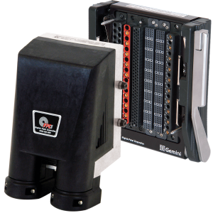
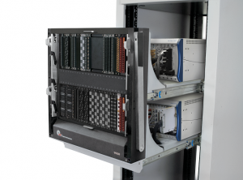

Корпорация АМЕТЕК и ее подразделение АМЕТЕК Programmable Power (Сан Диего, Калифорния)
являются мировыми лидерами в разработке и производстве высокоточных программируемых
источников энергии для научно-исследовательских и опытно-конструкторских работ,
тестирующих и измерительных систем, промышленных систем электроснабжения,
симуляции и моделирования работы систем питания в различных сегментах производства.
AMETEK Programmable Power выпускает программируемые источники постоянного тока таких
известных серийных брендов как Sorensen мощностью от 30 Ватт до 170 кВатт,
программируемые источники переменного тока серий ELGAR, Californian Instruments
от 800 ВА до 480 кВА, системы нагрузок AC/DC Sorensen в модульном и
высокомощном исполнении и др.
Компания АВИАОК является официальным системным интегратором и членом международного альянса
National Instruments (NI) – лидирующего мирового производителя контрольно-измерительного
и тестирующего оборудования.
АВИАОК предлагает измерительные системы, созданные на платформе NI:
Компания National Instruments, мировой лидер на рынке компьютерных систем автоматизации,
предлагает широкий ассортимент устройств сбора данных на базе технологий PCI, PCI Express,
PXI, PCMCIA, USB, CompactFlash, Ethernet, FireWire и операционных систем Windows, Linux,
Mac OS X, Pocket PC/Windows CE и RTX для использования в настольных, переносных, а так же
распределенных системах.
В России продукты National Instruments используют такие предприятия как:
ГосНИИ Авиационных Систем, ЦИАМ, Пермские Моторы, НПО"Сатурн", ТНТК им. Г.М. Бериева,
ЦАГИ, Центр Келдыша, ВНИИЖТ, НПЦАП, ГНПП "Регион", НПО Машиностроения, ЦНИИ Маш,
ЮжМаш, СКБВымпел, Силовые Машины, Моторола, Элкотек, ФГУП ЦНИИ "Электроприбор",
НИИ Прикладной акустики, НАЗ "Сокол", а также большинство технических ВУЗов.
Компания VPC производит специальное оборудование и программное обеспечение
для межкомпонентных соединений, обеспечивающее надежное соединение
Автоматического Тестирующего Оборудования и объектов контроля.
Данное оборудование позволяет пользователю объединить сигналы с высокой плотностью
передачи данных, силовые коаксиальные, оптико-волоконные пневматические и
термоэлементные соединения в любой комбинации в едином интерфейсе,
что обеспечивает возможность скоростного и надежного соединения с тестовым оборудованием.

